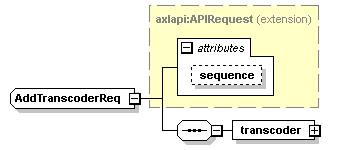
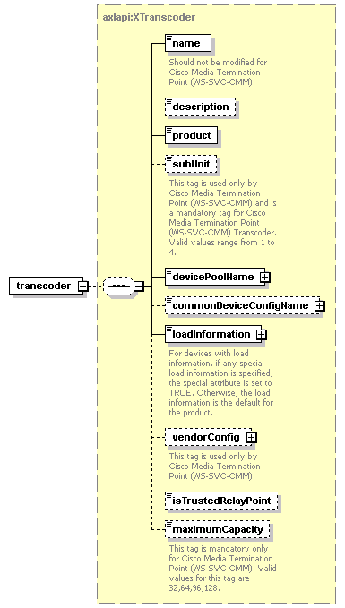

| diagram |  | ||||||||||||
| namespace | http://www.cisco.com/AXL/API/10.5 | ||||||||||||
| type | extension of axlapi:APIRequest | ||||||||||||
| properties |
|
||||||||||||
| children | transcoder | ||||||||||||
| used by |
|
||||||||||||
| attributes |
|
||||||||||||
| source | <xsd:complexType name="AddTranscoderReq"> <xsd:complexContent> <xsd:extension base="axlapi:APIRequest"> <xsd:sequence> <xsd:element name="transcoder" type="axlapi:XTranscoder"/> </xsd:sequence> </xsd:extension> </xsd:complexContent> </xsd:complexType> |
| diagram |  | ||
| type | axlapi:XTranscoder | ||
| properties |
|
||
| children | name description product subUnit devicePoolName commonDeviceConfigName loadInformation vendorConfig isTrustedRelayPoint maximumCapacity | ||
| source | <xsd:element name="transcoder" type="axlapi:XTranscoder"/> |